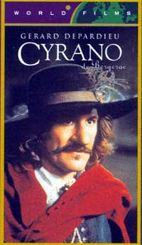
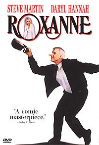

|

Texto de
Susana
Lopes de Alexandria
Crusher
e Barclay encenam "Cyrano"

|
A primeira cena do episdio "The
Nth Degree" mostra Beverly Crusher encenando uma pea
com Reginald Barclay, o tmido e desajeitado tenente que mal
consegue pronunciar as palavras. Se Barclay um desastre na arte
de interpretar, o mesmo no se pode dizer do ator Dwight Schultz,
que d um show de interpretao na evoluo de seu personagem
ao longo do episdio. Numa cena posterior, quando j est sob
influncia aliengena, ele interpreta com brilhantismo outra
cena da mesma pea, emocionando a dra. Crusher e a platia.
 Existiu um Cyrano de Bergerac de verdade, escritor e dramaturgo que viveu de 1619 a 1655, por volta da mesma poca que o Cyrano ficcional. Este Cyrano real provavelmente inspirou Edmond Rostand, mas os eventos da pea, bem como os outros personagens, foram fruto exclusivo de sua imaginao. Os acontecimentos da pea comeam em 1640. Em Paris, um brilhante poeta e espadachim, chamado Cyrano de Bergerac, est apaixonado por sua linda e inteligente prima, Roxane. O problema que Cyrano, apesar se sua extrema inteligncia e carisma, sofre com as dimenses exageradas de seu nariz e se considera feio demais para ousar declarar seu amor por Roxane. Mas ele no o nico apaixonado pela bela moa. O jovem, bonito e nobre Christian confessa a um amigo que est apaixonado por ela. Um dia, conversando com Roxane, Cyrano finalmente cria coragem para confessar seu amor pela prima, mas ela se adianta e lhe confidencia que est apaixonada por Christian, que em breve entrar para o companhia de guardas, os Cadetes de Gascoyne, comandados por Cyrano. Ela pede ao primo que proteja seu amado, e ele concorda. Quando Cyrano se rene com os novos cadetes recrutados, Christian sente a necessidade de provar sua coragem e insulta o narigo de Cyrano - ofensa que para qualquer outro teria sido fatal. Mas ao invs de matar Christian, Cyrano o abraa e conta ao jovem o que Roxane sente por ele. Christian fica desnorteado, pois Roxane uma intelectual e ele, um homem simples e sem poesia. Cyrano, ento, tem uma brilhante idia: ele prprio poder escrever cartas a Roxane, fingindo ser Christian. Desta forma ele teria a oportunidade de expressar seus sentimentos secretos por ela, e Christian ganharia a chance de atingir o corao de Roxane. Aps alguns dias, Roxane conta a Cyrano que Christian o poeta mais encantador do mundo e que ela sempre ficava sem palavras diante da emoo que sentia ao ler suas cartas. Mas Christian diz a Cyrano que no precisa mais de sua ajuda e vai casa de Roxane para tentar seduzi-la com suas prprias palavras. Roxane no entende como algum conseguia ser to potico nas cartas e to sem imaginao pessoalmente, ento bate a porta e entra, confusa e zangada.  Roxane e Christian casam-se pouco tempo depois, mas sua felicidade dura pouco. De Guinche, um comandante tambm apaixonado por Roxane, decide enviar os Cadetes de Gascoyne para a frente de batalha na guerra contra a Espanha. Mesmo em meio batalha, Cyrano escreve a Roxane todos os dias usando o nome de Christian, arriscando a prpria vida todas as manhs, quando se esgueira pela linhas espanholas a fim de encontrar um lugar onde possa postar a carta. Um dia Cyrano surpreendido pela chegada de Roxane, que salta de uma carruagem trazendo um banquete para os soldados. Naturalmente, estava ansiosa para ver Christian. Mas o jovem cadete havia descoberto o amor secreto de Cyrano por Roxane e fora-o a contar toda a verdade sua esposa, para que ela faa uma escolha entre os dois. Cyrano est prestes a confessar toda a verdade quando repentinamente comea um tiroteio. Christian morre e Cyrano perde a chance de contar a verdade a Roxane. Quinze anos mais tarde, Roxane est vivendo em um convento, e Cyrano a visita todos os dias. Mas Cyrano havia feito muitos inimigos ao longo dos anos e um dia vtima de uma emboscada, que o deixa entre a vida e a morte. Sua sade est to debilitada que ele mal consegue erguer sua cabea do travesseiro. Mesmo assim, Cyrano vai at o convento onde est Roxane, caminhando devagar e com uma expresso de dor no rosto, mas feliz por poder ver sua amada. Ao cair da noite, ele pede a ela para ler a ltima carta enviada por Christian. Ele comea a ler a carta em voz alta, e quando a escurido da noite j completa, continua a leitura como se conhecesse as palavras de cor. Roxane ento se d conta de que Cyrano era o homem por cuja alma se apaixonara desde o incio. Cyrano tira ento o chapu e mostra a ela sua cabea toda enfaixada. Roxane chora, diz que o ama e que ele no pode morrer. Cyrano puxa sua espada e tem sua ltima luta com seus "velhos inimigos" - a falsidade, o preconceito, a renncia. Depois cai no cho e morre, sorrindo, enquanto Roxane se debrua sobre ele e beija seu rosto. "Cyrano de Bergerac" teve vrias verses para cinema, mas duas delas se destacam. A primeira uma verso francesa de 1990, fiel pea original, com Gerard Depardieu no papel de Cyrano (para saber mais sobre este filme, clique aqui). A outra "Roxanne", de 1987,uma comdia americana que transporta a trama para os tempos atuais, com Steve Martin (O Pai da Noiva) e Daryl Hannah (Splash - Uma Sereia em Minha Vida). Mas como Hollywood no gosta de finais trgicos, esta comdia tem final feliz (para saber mais sobre este filme, clique aqui). Provavelmente a escolha de "Cyrano
de Bergerac" para as duas cenas do episdio "The
Nth Degree" no tenha sido por acaso. Talvez Rick Berman
tenha visto um paralelo entre os personagens Barclay e Christian,
pois ambos precisaram de ajuda "externa" para conquistar
o corao de uma mulher, ambos tinham a "alma" de uma
outra pessoa/entidade mais poderosa. Bem, no se pode dizer que
Barclay tenha conquistado o corao de Deanna Troi, mas pelo
menos conseguiu que ela aceitasse dar um passeio com ele, no final
do episdio. E isso j um avano para o tenente, que at
ento ("Hollow Pursuits") s havia conseguido
chegar perto da imagem de Troi criada por ele no holodeck!
|